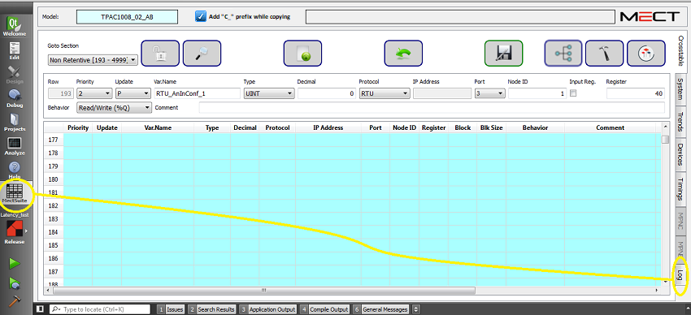
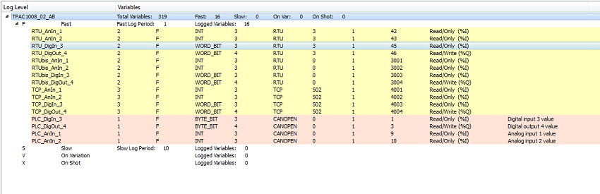

L'onglet "Log" permet de visualiser toutes les variables "historisées".

L'interface est la suivante:

Cet écran affiche toutes les informations des variables définies comme "historicisées"(F, S, V, X).
Le tableau est en mode READ-ONLY. En cliquant sur la variable désirée, vous pouvez accéder directement à l'éditeur de la Crosstable où vous pouvez modifier les données.